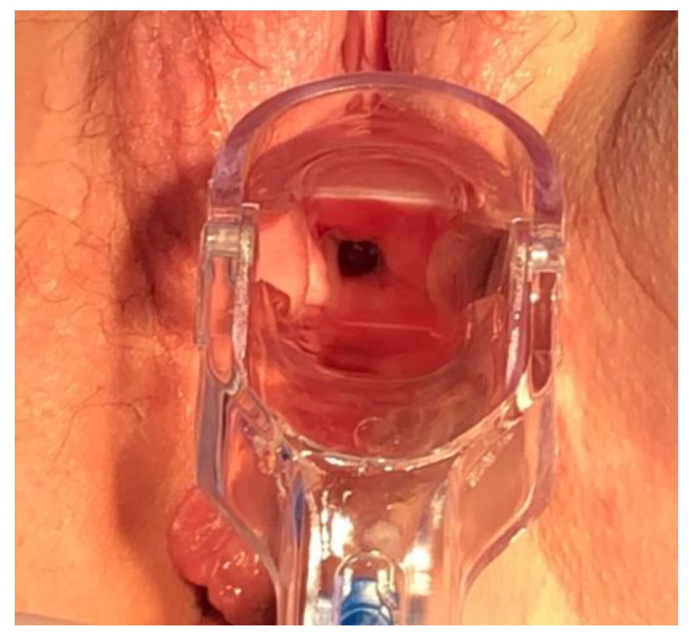

Página 3 · Parte 1 · Fístulas genitais
A perda que está sempre ali: o que se vê e quando aparece
A paciente terminou a radioterapia há dois anos e começou a molhar agora. O reflexo é descartar fístula pelo tempo decorrido — e é exatamente aí que se erra.
O que se surpreende na vagina é urina
Havendo comunicação anormal entre bexiga e vagina, o que se surpreende na vagina é urina — direto assim. E a marca clínica da fístula vesicovaginal é a drenagem contínua de urina pela vagina: uma perda que não tem ritmo, não depende de esforço, não é precedida de urgência e não cessa. Está sempre ali. A paciente descreve umidade permanente, troca de absorvente o dia inteiro, e com frequência já se tratou várias vezes como corrimento sem qualquer melhora. A palavra que organiza a semiologia é contínua: é ela que separa esse quadro de tudo o que perde urina por episódios.
O relógio da fístula operatória: imediata a três semanas
Na fístula que veio de cirurgia, a perda pode ser imediata ou surgir até três semanas de pós-operatório. Esse envelope é generoso de propósito, mas dentro dele existe uma moda estreita, e é ela que a banca costuma desenhar no enunciado: o pico está entre 7 e 14 dias, tipicamente depois da retirada da sonda vesical. Vale saber por que o mesmo procedimento produz dois tempos diferentes. A perda imediata costuma corresponder à lesão vesical reconhecível já no intraoperatório — o trajeto existe desde o primeiro minuto. A perda que estreia por volta de 7 a 14 dias corresponde à necrose do ponto suturado ou desvascularizado: no ato cirúrgico não havia buraco nenhum, o tecido é que foi perdendo viabilidade até se romper. Duas apresentações, dois mecanismos — e é o eco direto do que separa lesão direta de isquemia.
A quebra de escala: a fístula actínica estreia anos depois
Aqui está o dado que mais surpreende e o que mais derruba raciocínio: quando se trata de fístula complexa, pós-radioterapia, a manifestação pode ser muito mais tardia — meses ou anos após o término da radioterapia. E "anos" não é força de expressão. A literatura descreve fístulas actínicas surgindo entre 5 meses e 20 anos depois do tratamento, com concentração maior em torno de 1,5 a 2 anos, e complicações urinárias da irradiação registradas até décadas depois. O mecanismo explica o relógio: a radiação produz arterite obliterante progressiva, com atrofia e necrose lenta do epitélio, ulceração e, por fim, fissura — é um processo que continua trabalhando muito depois de a paciente ter recebido alta da oncologia. A consequência prática é uma só, e é a que a prova cobra: não se descarta fístula porque "a cirurgia ou a radioterapia foi há muito tempo". Numa paciente irradiada, o intervalo longo não afasta o diagnóstico — ele o sugere.
O diferencial que não se pula
Diante de fístula vesicovaginal é obrigatório fazer a diferenciação com as incontinências urinárias ↗A7. Não é formalidade: perda vaginal contínua costuma ser rotulada como corrimento ou como "incontinência" genérica, e o rótulo errado custa meses. Os ramos a nomear são três: a incontinência urinária de esforço ↗A7; a urge-incontinência ↗A7; e as incontinências por transbordamento ↗A7, aquelas que envolvem situações neurológicas. O exemplo típico de situação neurológica que leva ao transbordamento é a neuropatia diabética. Cada um desses padrões tem sua própria caracterização e sua própria investigação ↗A7. O que importa reter aqui é o discriminador: os três perdem por episódio, com gatilho ou com ritmo; a fístula perde sem parar.
O achado que abre a investigação
A suspeita clínica normalmente nasce do exame especular: vê-se claramente o acúmulo de urina na vagina. É um achado banal de descrever e decisivo na prática — com a paciente em posição de exame, a urina que escoa continuamente pelo trajeto se deposita no fundo de saco, e a válvula do espéculo revela uma coleção líquida que não é secreção. Às vezes o próprio orifício fistuloso é visível à inspeção da parede vaginal anterior. Esse é o momento em que a queixa vira hipótese: identificada a urina na vagina, a investigação para de perguntar se existe fístula e passa a perguntar de onde ela vem — que é o assunto seguinte.
Linha do tempo — a escala muda
toque em cada marcoPerda contínua = fístula; esforço, urgência e transbordamento pertencem ao diferencial ↗A7.

Ao exame especular, observa-se o óstio fistuloso na cúpula vaginal direita, confirmado no caso como fístula vesicovaginal recorrente pós-radioterapia.
O defeito circular escuro corresponde ao orifício vaginal da fístula. Como a paciente havia sido submetida a histerectomia radical, ele não deve ser confundido com o orifício cervical: trata-se de uma abertura patológica na cúpula vaginal.
A fotografia demonstra o óstio, mas sua aparência isolada não prova que o líquido seja urina. A origem vesical é confirmada pela saída de corante intravesical e pela avaliação com cistoscopia e cistografia. Na fístula ureterovaginal, a drenagem pode permanecer clara ou alaranjada pela fenazopiridina, sem azul intravesical. Em tecido irradiado, necrose e recorrência tumoral também entram no diferencial de uma lesão irregular.
Kołodyńska A, Streit-Ciećkiewicz D, Kot A, Kuliniec I, Futyma K. Radiation-Induced Recurrent Vesicovaginal Fistula—Treatment with Adjuvant Platelet-Rich Plasma Injection and Martius Flap Placement. IJERPH. 2021;18(9):4867, Figura 1. CC BY 4.0. DOI 10.3390/ijerph18094867. Consentimento informado e consentimento escrito para publicação registrados no artigo. Sem alterações; acesso em 28/07/2026.
Quiz — fixação
Mulher de 62 anos, tratada com radioterapia pélvica por câncer de colo há 3 anos, refere há 2 meses perda vaginal contínua de líquido com odor de urina, já tratada como corrimento sem melhora. A conduta mais adequada em relação à hipótese de fístula é:
- Gabarito B. A fístula actínica decorre de arterite obliterante progressiva, com necrose lenta do epitélio — ela estreia entre 5 meses e 20 anos após o tratamento, concentrando-se em torno de 1,5-2 anos. O tempo decorrido, aqui, reforça o diagnóstico em vez de afastá-lo.
- (A) aplica à fístula complexa o relógio da fístula não complicada (imediata a 3 semanas), que é outra entidade temporal.
- (C) ignora o discriminador semiológico: a perda descrita é contínua, sem relação com esforço; a IUE perde por episódio, com gatilho pressórico ↗A7.
- (D) condiciona o diagnóstico à cirurgia, esquecendo que radioterapia é etiologia própria e é justamente a do braço complexo.
- Por que cair na (A): o candidato transporta, sem perceber, a janela de três semanas do pós-operatório para um cenário actínico — é exatamente a inversão de escala que a questão testa.
O dado semiológico que melhor distingue a fístula vesicovaginal dos demais padrões de perda urinária é:
- Gabarito C. O que caracteriza a fístula é a continuidade: não há esforço que a dispare nem urgência que a preceda — a urina simplesmente não para de chegar à vagina, porque existe um caminho aberto permanentemente.
- (A) volume não separa: a fístula pequena pode dar perda de baixo débito, e a incontinência de esforço grave pode dar perdas volumosas.
- (B) noctúria/perda noturna aponta para outros mecanismos e não é a assinatura da fístula, que não respeita horário.
- (D) disúria sugere infecção ou irritação vesical e não faz parte do quadro típico.
- Por que cair na (A): associa-se "buraco na bexiga" a "perda enorme", mas o calibre do trajeto define o débito, não a natureza do sintoma — uma fístula puntiforme mantém a paciente úmida sem encharcá-la, e continua sendo fístula.
Identificada a urina na vagina, resta a única pergunta que muda tudo — e ela se responde com um cateter, um corante e um tampão.